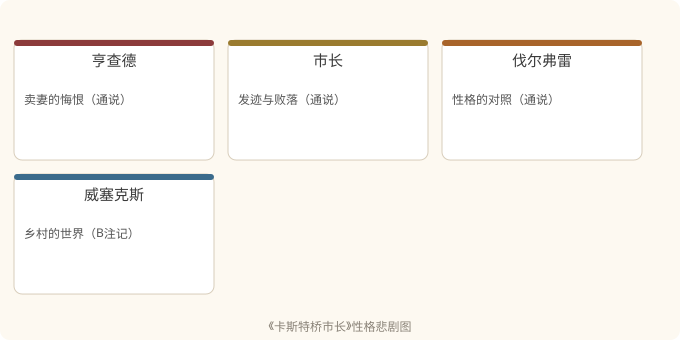

卡斯特桥市长
一、基本信息
| 作者 | 哈代 |
|---|---|
| 成书/出版 | 1886年（作者页注记：Britannica 列举——卡斯特桥市长 (1886)——'威塞克斯小说'） Thomas Hardy — Encyclopaedia Britannica（百科全书） |
| 国别/地区 | 英国 |
| 时代 | 近代 · 19世纪80年代 |
| 体裁 | 长篇小说 |
| 语言 | 英语 |

《卡斯特桥市长》性格悲剧图（主题·结构图）
二、创作背景
作者页注记：远离尘嚣 (1874)、还乡 (1878)、卡斯特桥市长 (1886)、无名的裘德 (1895)——''威塞克斯小说'（Britannica 列举）'。
Britannica：哈代——英国小说家与诗人（作者页语境）。
题材（通说待核）：亨查德卖妻——命运与性格悲剧。
三、内容脉络
（通说待核）亨查德的卖妻悔恨与发迹为市长。
（通说待核）伐尔弗雷的登场与亨查德的败落。
四、主要人物表
| 人物 | 身份 | 说明 |
|---|---|---|
| 迈克尔·亨查德 | 市长/谷物商 | （通说待核） |
| 唐纳德·伐尔弗雷 | 苏格兰人对手 | （通说待核） |
五、主题与艺术特点
- '性格即命运'的希腊式悲剧（通说待核）。
- 威塞克斯的乡村与市场（B注记语境）。
- 传统农业社会的解体（通说待核）。
六、影响与评论
- Britannica：'威塞克斯小说'（作者页注记）。
Thomas Hardy — Encyclopaedia Britannica（百科全书） - Britannica：哈代《德伯家的苔丝》为代表作（作者页交叉）。
Thomas Hardy — Encyclopaedia Britannica（百科全书）
七、阅读建议
难点
- 多塞特乡村社会。
- '性格悲剧'的古典结构。
- 《卡斯特桥市长》中译本（人民文学等——通说待核）。
- 英文原版（公有领域）。
哈代中期首选；与《德伯家的苔丝》对读。
八、待核实
- 亨查德人名核对（通说）。
- 1886年连载/出版细节待核。
- '卖妻'开场细节待核。